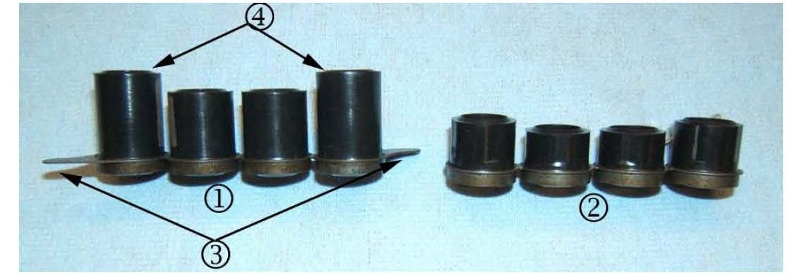
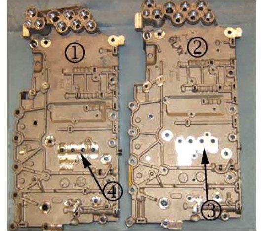
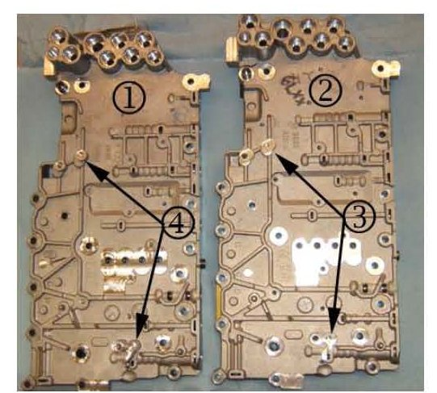
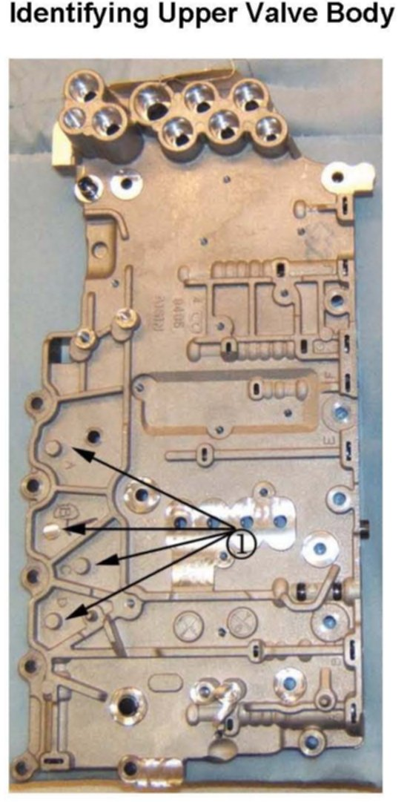
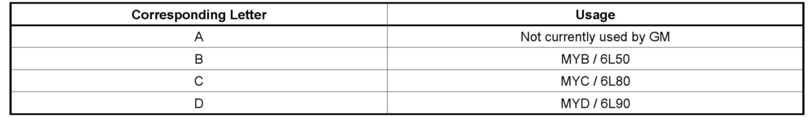

A/T - 6L50, 6L80/6L90 Internal Differences
INFORMATIONBulletin No.: 09-07-30-005
Date: February 25, 2009
Subject:
Information on 6L50 (MYB) Automatic Transmission Center Support Fluid Passage Seal Assembly and Upper Valve Body Assembly
Models:
2007-2009 Cadillac SRX, STS
2008-2009 Cadillac CTS
Equipped with 6L50 Automatic Transmission (RPO MYB)
Important:
Refer to the parts catalog to obtain the correct P/N when replacing the center support fluid passage seal or the upper valve body assembly.
Three Differences Between a 6L50 Transmission and a 6L80/6L90 Transmission

1. The center support fluid passage seal for the 6L50 transmission (1) is approximately 8 mm (5/16 inch) taller (4) than the seal used on the 6L80 / 6L90 transmission (2). The 6L50 seal can also be identified by the metal tabs or "wings" (3) extending from the ends of the seal. The shorter 6L80 / 6L90 (2) part will not seal the valve body to the center support, resulting in an internal fluid leak and shifting concerns.

2. The 6L50 upper valve body (1) center support oil transfer holes are in a different location than the 6L80 / 6L90 valve body (2). The 6L50 upper valve body (1) center support oil transfer holes are located in the middle (4). The 6L80 / 6L90 valve body center support oil transfer holes are located more to the top (3).
Important:
Installation of the 6L80 / 6L90 upper valve body on a 6L50 transmission may result in an internal fluid leak with no forward or reverse.

3. The 6L50 upper valve body (1) has taller bosses for the input and output speed sensors. The 6L50 upper valve body (1) input and output speed sensor bosses are taller at point (4). The 6L80 / 6L90 valve body (2) has much shorter bosses (3).
Important:
Installation of a 6L80 / 6L90 upper valve body will not place the input and output speed sensors close enough to their respective drums to generate a speed signal. The result may be speed signal DTCs or shifting issues.
Identifying Upper Valve Body


The small post (1) located on the side of the upper valve body is machined off to a corresponding letter A, B, C or D. The table shown above will help determine the usage of the upper valve body.

Disclaimer